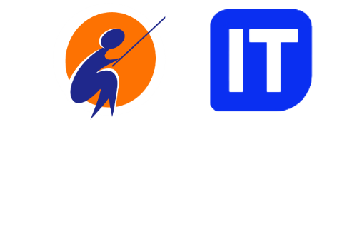
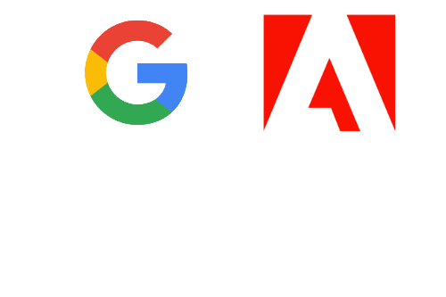
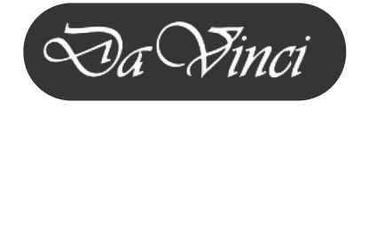

Mi propósito en tecnología.
Hace tres años, en la búsqueda de mi vocación, descubrí que podía fusionar mi interés por la tecnología con el diseño para dar vida a mis ideas. A partir de ese momento, comencé a explorar activamente diversas áreas como la programación, el diseño UX/UI y la inteligencia artificial.
Hoy comprendo la importancia de una formación complementaria sólida y de un proceso de aprendizaje constante para conseguir una oportunidad profesional en el sector IT.

2022-2023
Obtuve una beca para una capacitación laboral en Desarrollo Web Full-Stack a cargo de Educación IT, con mentorías de profesionales de diversas áreas de JP Morgan, Makro y L'oreal. Esto marcó mi primer acercamiento al área de tecnología.

2024-2025
Realicé diversas certificaciones online, entre ellas Diseño Gráfico de Adobe, Diseño UX/UI de Google y Marketing Digital, lo que me permitió desarrollar y recopilar los proyectos que forman parte de este portafolio, el cual continúa en desarrollo.

2026
Actualmente me encuentro aprendiendo WordPress, para agilizar mis tiempos de trabajo y ampliar conocimientos técnicos.
A futuro, me gustaría dominar React y TailwindCSS para continuar con mi desarrollo profesional.
2022-2023
Obtuve una beca para una capacitación laboral en Desarrollo Web Full-Stack a cargo de Educación IT, con mentorías de profesionales de diversas áreas de JP Morgan, Makro y L'oreal. Esto marcó mi primer acercamiento al área de tecnología.
2024-2025
Realicé diversas certificaciones online, entre ellas Diseño Gráfico de Adobe, Diseño UX/UI de Google y Marketing Digital, lo que me permitió desarrollar y recopilar los proyectos que forman parte de este portafolio, el cual continúa en desarrollo.
2026
Actualmente me encuentro aprendiendo WordPress, para agilizar mis tiempos de trabajo y ampliar conocimientos técnicos. A futuro, me gulogoía dominar React y TailwindCSS para continuar con mi desarrollo profesional.


¿Cómo es mi proceso creativo?
Observar y entender qué puede mejorar
Encuentro inspiración en profesionales con mayor experiencia. Identifico qué recursos podría incorporar para desarrollar una propuesta propia.
Investigar, probar y dejar que las ideas evolucionen
Busco entender qué funciona, qué no y por qué. Disfruto explorar alternativas hasta encontrar una dirección que represente al proyecto.
Convierto la inspiración en una creación concreta
Llevo la inspiración a la práctica, experimentando con distintas herramientas de diseño y tecnologías hasta materializar mis ideas.
Publicar, recibir feedback y seguir aprendiendo
Analizo qué podría funcionar mejor, qué corregir o simplificar para encontrar un equilibrio entre lo que imaginé y el resultado final.